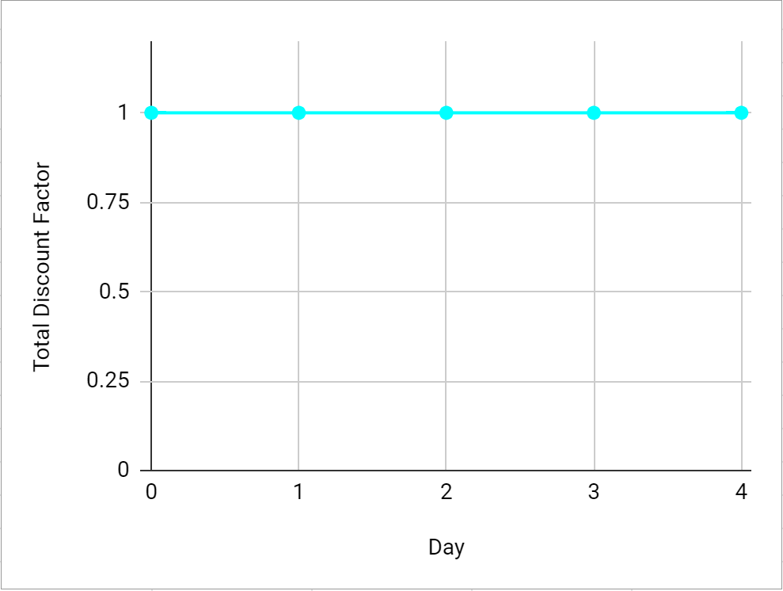
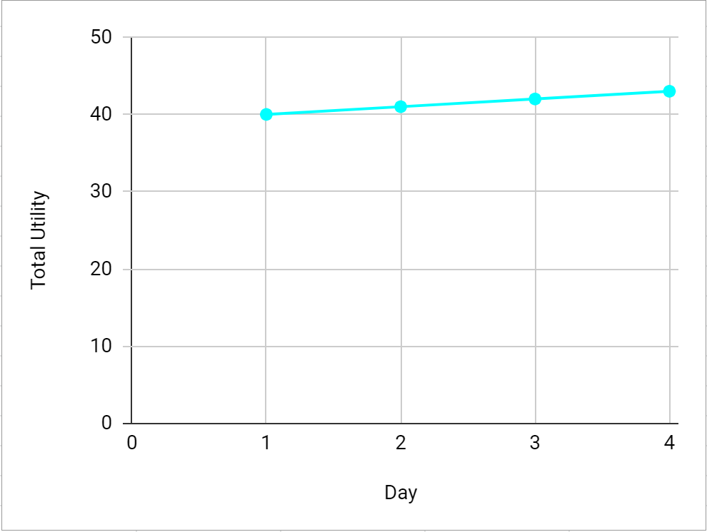

SI 649 InfoVis Individual Project - Vincent Qiu
Time-Dependent Preferences
Behavioral economics is the study of human psychological effects on their decision-making1. It comes out of observations of individuals seemingly selecting unpredictable or irrational choices in some situations. One concept that comes out of this field is that of time-dependent preferences. This concept addresses the potential for an individual's preferences to be influenced by the moment of decision-making or the among of time until the chosen option pays off, or the potential for an individual's preferences to change as time passes. The concept can be demonstrated by the quasi-hyperbolic discounting model2, as represented by this equation:
UT = ut0 + β ( δ ut1 + δ2 ut2 + δ3 ut3 + ... ) UT is the total utility of an option tn is a discrete moment in time t0 is the moment at which the choice is being made utn is the marginal utility of the option at that time δ is the exponential aka geometric discount factor β is the quasi-hyperbolic discount factor
Utility is the economics representation for value3. In this case, it is the value provided by the outcome of a particular option to the decision-maker, and it allows us to assess preferences since a rational decision-maker should always select the option of greatest utility. Let's explore this concept through a simplified scenario:
| Option | Day 0 | Day 1 | Day 2 | Day 3 | Day 4 |
| Study | 0 | 12 | 11 | 10 | 9 |
| Relax | 0 | 10 | 10 | 10 | 10 |
Above is the table of options and utilities for a hypothetical student. This student has an exam coming up and should do some studying in the next few days to prepare for it. This student is smart and recognizes that studying earlier has greater benefit than studying later, as indicated by the study option decreasing in utility as the days pass. This student is extra smart and recognizes that taking a day of break is good for mental health, as indicated by the similar amount of utility gained by the relax option. However, the exam is pretty significant, so the student only can choose to take 1 day of relaxing, and wants to decide today (Day 0) which of the upcoming days (Days 1-4) will be reserved for relaxing. The graphs below depict the total discount factor (upper graph) and total utility (lower graph) over time for this scenario, and the displayed equations will update according to settings for δ and β. The initial settings for the discount factors δ and β are both 1, which symbolizes an individual whose preferences are not affected by time. On the total utility graph, the utility value for each day is the total utility if the student chooses to relax on that day. For example, if on Day 0 the student were to choose to relax on Day 2 and to study the rest of the days, then the equation calculation would be as follows using the values from the above table:
UT = ut0 + β ( δ ut1 + δ2 ut2 + δ3 ut3 + δ4 ut4 ), δ = 1, β = 1 UT = uDay0 + uDay1 + uDay2 + uDay3 + uDay4 UT = 0 + 12 + 10 + 10 + 9 UT = 41
Verify that the value for Day 2 on the total utility graph reflects this result. Looking more closely at the total utility graph, we can see a slight upward slope, which tells us that this student at the current moment in time prefers holding off on relaxing until a later day. Truly this is a diligent student. Now, what if the student had time-dependent preferences? Adjust the setting for δ to a smaller number and observe what happens to the discount factor and utility graphs. With δ < 1, the student prefers relaxing sooner rather than later. In this case, the student's utility is said to be affected by exponential or geometric discounting, and it causes them to be present-biased in their choices. To go further, keeping δ at a value less than 1, adjust the setting for β to a smaller number as well and observe what happens to the discount factor and utility graphs. Looking at the total utility, with these discounting factors, it appears that the student is still present-biased as choosing to relax on Day 1 provides more utility than relaxing on any other day. Now, adjust the bottom slider to change the day of reference to Day 1. Surprisingly, upon arrival of Day 1, the student's preference has changed and now prefers relaxing at a later time. This is called time-inconsistent preference and is a result of hyperbolic or quasi-hyperbolic discounting with both δ < 1 and β < 1. Adjust β back to 1 and confirm that with solely exponential / geometric discounting that there are no instances of time-inconsistency: the student consistently prefers relaxing earlier rather than later, regardless of day of reference.δ = 1
β cannot be adjustedunless δ set to < 1
β = 1
UT = uDay0 + 1 ( 1 uDay1 + 12 uDay2 + 13 uDay3 + 14 uDay4 )
UT = uDay0 + 1 uDay1 + 1 uDay2 + 1 uDay3 + 1 uDay4
 Day 0
Clarification of Terms
Exponential and geometric discounting are used interchangeably in this article, but they do have a specific distinction: exponential discounting applies to continuous time and geometric discounting applies to discrete moments of time. In the example scenario explored in this article, geometric discounting would be the more accurate term. Similarly, hyperbolic discounting and quasi-hyperbolic discounting are also differentiated in that hyperbolic discounting applies to continuous time and quasi-hyperbolic discounting applies to discrete moments of time. The specific equation presented in this article is called the quasi-hyperbolic approximation, and to keep the example simple, a limited number of points in time were used, which results in lower resolution of the curves. Most visualizations of these discounting models are smooth curves, and an example of a typical visualization taken from a research paper is shown below. See if you can adjust the settings of the above graphs to simulate the significant differences between the types of discounting curves.
References
1 https://www.investopedia.com/terms/b/behavioraleconomics.asp 2 https://www.intelligenteconomist.com/time-inconsistency/ 3 https://www.investopedia.com/terms/u/utility.asp 4 https://scholar.harvard.edu/files/laibson/files/intertemporal_choice.pdf